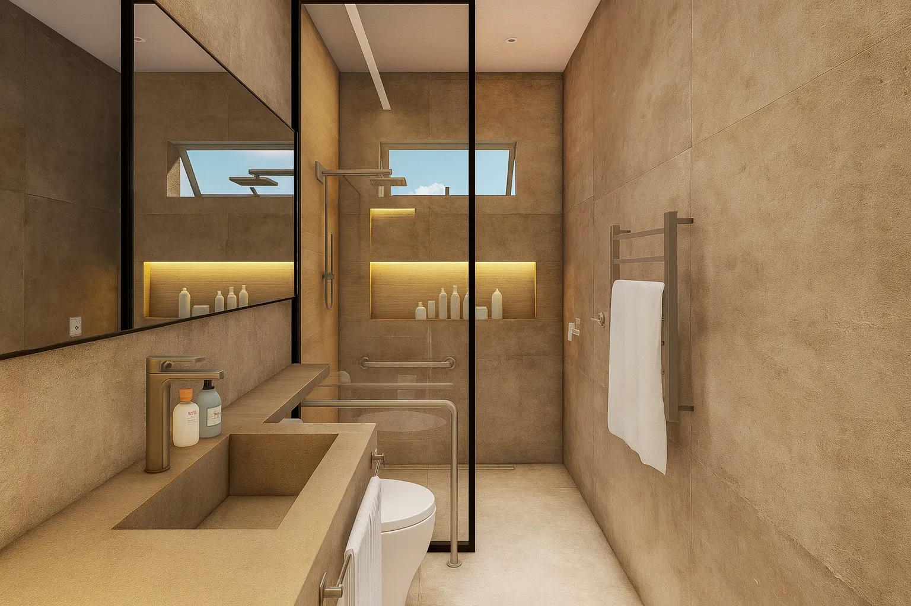

Arquiteta em Horizontina - RS
Horizontina fica a cerca de 37 km de São Martinho, onde está meu escritório, e faz parte da região que atendo com reuniões online e visitas presenciais ao terreno, ao imóvel e à obra.
Crio projetos residenciais, comerciais e de interiores com identidade, precisão técnica e foco no bem-estar de quem vive cada espaço.

Arquitetura que cuida de quem usa o espaço
A neuroarquitetura estuda como luz, cores, materiais e organização influenciam o humor, o descanso e a concentração. Aplico esses princípios em casas, escritórios e espaços comerciais.
- DistânciaCerca de 37 km de São Martinho
- ReuniõesOnline ou presenciais
- VisitasTerreno, imóvel e obra em Horizontina
Serviços para Horizontina
Consultoria
Análise de viabilidade, brief e direcionamento estratégico.
Estudo preliminar
Tradução do programa em conceitos espaciais e volumétricos.
Anteprojeto
Desenvolvimento das soluções com materiais e sistemas.
Projeto executivo
Detalhamentos técnicos e compatibilização.
Interiores
Ambientes funcionais com identidade e conforto.
Acompanhamento de obra
Supervisão técnica e qualidade na execução.
Como funciona
-
Etapa 1Briefing
Levantamento de necessidades e referências.
-
Etapa 2Conceito
Diretrizes espaciais e materiais.
-
Etapa 3Projeto
Desenvolvimento e compatibilização.
-
Etapa 4Executivo
Detalhamento técnico para obra.
-
Etapa 5Obra
Acompanhamento e assistência técnica.
Perguntas de quem é de Horizontina
Você atende em Horizontina?
Sim, com reuniões online e visitas presenciais conforme as etapas do projeto e da obra. Meu escritório fica em São Martinho, a cerca de 37 km.
O que é neuroarquitetura na prática?
É usar o que se sabe sobre como o ambiente afeta as pessoas para decidir luz, cores, materiais e layout. Na prática: quartos que favorecem o descanso, áreas de trabalho que ajudam a concentração e espaços comerciais mais acolhedores.
Atende também cidades perto de Horizontina?
Sim: Doutor Maurício Cardoso, Tucunduva, Três de Maio, Nova Candelária, Crissiumal e Boa Vista do Buricá, entre outras cidades do noroeste do RS, com reuniões online e visitas presenciais conforme o projeto.
E se eu for de fora da região?
Atendo online em todo o Brasil: briefing, apresentações e acompanhamento por videochamada. As visitas presenciais ficam para quem está na região.
Vamos conversar sobre o seu projeto em Horizontina?
Conte sobre o terreno, a reforma ou o ambiente. Respondo rápido.